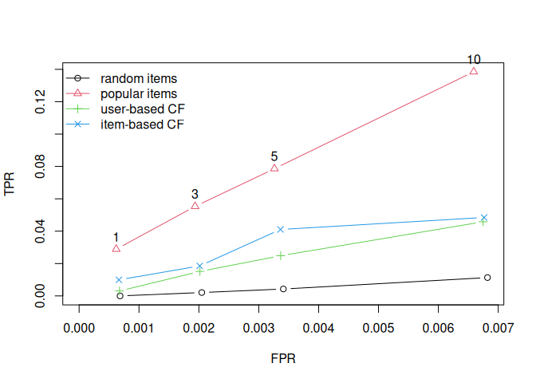

Maintainer: Michael Hahsler
Introduction
Provides a research infrastructure to develop and evaluate collaborative filtering recommender algorithms. This includes a sparse representation for user-item matrices, many popular algorithms, top-N recommendations, and cross-validation. The package supports rating (e.g., 1-5 stars) and unary (0-1) data sets.
The following R packages use recommenderlab: cmfrec, crassmat, recometrics, recommenderlabBX, recommenderlabJester, RMOA
To cite package ‘recommenderlab’ in publications use:
Hahsler M (2022). “recommenderlab: An R Framework for Developing and Testing Recommendation Algorithms.” arXiv:2205.12371 [cs.IR]. doi:10.48550/ARXIV.2205.12371 https://doi.org/10.48550/ARXIV.2205.12371.
Supported algorithms
Recommender algorithm
- User-based collaborative filtering (UBCF)
- Item-based collaborative filtering (IBCF)
- SVD with column-mean imputation (SVD)
- Funk SVD (SVDF)
- Alternating Least Squares (ALS)
- Matrix factorization with LIBMF (LIBMF)
- Association rule-based recommender (AR)
- Popular items (POPULAR)
- Randomly chosen items for comparison (RANDOM)
- Re-recommend liked items (RERECOMMEND)
- Hybrid recommendations (HybridRecommender)
Installation
Stable CRAN version: Install from within R with
install.packages("recommenderlab")Current development version: Install from r-universe.
install.packages("recommenderlab",
repos = c("https://mhahsler.r-universe.dev",
"https://cloud.r-project.org/"))Usage
Load the package and prepare a dataset (included in the package). The MovieLense data contains user ratings for movies on a 1 to 5 star scale. We only use here users with more than 100 ratings.
set.seed(1234)
library("recommenderlab")
data("MovieLense")
MovieLense100 <- MovieLense[rowCounts(MovieLense) > 100, ]
MovieLense100Train a user-based collaborative filtering recommender using a small training set.
train <- MovieLense100[1:300]
rec <- Recommender(train, method = "UBCF")
recCreate top-N recommendations for new users (users 301 and 302).
pre <- predict(rec, MovieLense100[301:302], n = 5)
pre
as(pre, "list")## $`0`
## [1] "Amistad (1997)" "Kama Sutra: A Tale of Love (1996)"
## [3] "Farewell My Concubine (1993)" "Roommates (1995)"
## [5] "Fresh (1994)"
##
## $`1`
## [1] "Bitter Moon (1992)" "Touch of Evil (1958)"
## [3] "Braindead (1992)" "Great Dictator, The (1940)"
## [5] "M (1931)"Use a 10-fold cross-validation scheme to compare the top-N lists of several algorithms. Movies with 4 or more stars are considered a good recommendation. We plot true negative vs. true positive rate for top-N lists of different lengths.
scheme <- evaluationScheme(MovieLense100, method = "cross-validation", k = 10, given = -5,
goodRating = 4)
scheme## Evaluation scheme using all-but-5 items
## Method: 'cross-validation' with 10 run(s).
## Good ratings: >=4.000000
## Data set: 358 x 1664 rating matrix of class 'realRatingMatrix' with 73610 ratings.
algorithms <- list(`random items` = list(name = "RANDOM", param = NULL), `popular items` = list(name = "POPULAR",
param = NULL), `user-based CF` = list(name = "UBCF", param = list(nn = 3)), `item-based CF` = list(name = "IBCF",
param = list(k = 100)))
results <- evaluate(scheme, algorithms, type = "topNList", n = c(1, 3, 5, 10), progress = FALSE)
plot(results, annotate = 2, legend = "topleft")
Shiny App
A simple Shiny App running recommenderlab can be found at https://mhahsler-apps.shinyapps.io/Jester/ (source code).
References
- Michael Hahsler (2022) recommenderlab: An R framework for developing and testing recommendation algorithms. arXiv:2205.12371 [cs.IR]. DOI: 10.48550/arXiv.2205.12371.
- recommenderlab reference manual
- Suresh K. Gorakala and Michele Usuelli (2015) Building a Recommendation System with R (Packt Publishing) features the package recommenderlab.